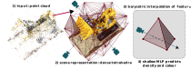

Demo
We provide interactive demo showing the trained models together with the original point clouds and tetrahedra. Please visit the demo page or click on one of the following:
Neural Radiance Fields (NeRFs) are a very recent and very popular approach for the problems of novel view synthesis and 3D reconstruction. A popular scene representation used by NeRFs is to combine a uniform, voxel-based subdivision of the scene with an MLP. Based on the observation that a (sparse) point cloud of the scene is often available, this paper proposes to use an adaptive representation based on tetrahedra and a Delaunay representation instead of the uniform subdivision or point-based representations. We show that such a representation enables efficient training and leads to state-of-the-art results. Our approach elegantly combines concepts from 3D geometry processing, triangle-based rendering, and modern neural radiance fields. Compared to voxel-based representations, ours provides more detail around parts of the scene likely to be close to the surface. Compared to point-based representations, our approach achieves better performance.  The input to Tetra-NeRF is a point cloud which is triangulated to get a set of tetrahedra used to represent the radiance field. Rays are sampled, and the field is queried. The barycentric interpolation is used to interpolate tetrahedra vertices, and the resulting features are passed to a shallow MLP to get the density and colours for volumetric rendering.
We provide interactive demo showing the trained models together with the original point clouds and tetrahedra. Please visit the demo page or click on one of the following:
@article{kulhanek2023tetranerf,
title={{T}etra-{NeRF}: Representing Neural Radiance Fields Using Tetrahedra},
author={Kulhanek, Jonas and Sattler, Torsten},
journal={arXiv preprint arXiv:2304.09987},
year={2023},
}